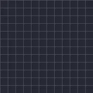

Progreso de texto

Muestra el texto entre Inicio y Fin, por carácter, palabra o línea, con fundidos, deslizamientos, escalado o desenfoque opcionales.
Progreso de texto muestra una capa de texto poco a poco. Anima Fin de 0 % a 100 % y el texto aparece según Basado en: carácter, palabra o línea, en la Dirección que elijas. Aparecer como define cómo entra cada pieza: pop, fundido, deslizar, crecer, encoger o desenfoque. Los preajustes listos para usar Máquina de escribir, Fundido de entrada por palabra, Deslizar hacia arriba por letra y Pop de entrada ya tienen los fotogramas clave configurados.
Ajustes
| Ajuste | Tipo | Rango | Predeterminado |
|---|---|---|---|
| Inicio | Número | 0% a 100% | 0% |
| Fin | Número | 0% a 100% | 100% |
| Basado en | Opción | Carácter, Palabra, Línea | Carácter |
| Dirección | Opción | Desde el inicio, Desde el final, Desde el centro, Aleatorio | Desde el inicio |
| Aparecer como | Opción | Salto, Desvanecer, Deslizar arriba, Deslizar abajo, Deslizar a la izquierda, Deslizar a la derecha, Crecer, Encoger, Desenfoque | Desvanecer |
| Suavidad | Número | 0 a 50 | 0 |
| Distancia | Número | 0 a 1000 | 40 |
| Semilla | Número | 0 a 1000 | 1 |
Preajustes
Elige uno en la página de detalles del efecto en la Biblioteca de efectos. Cada uno es un ajuste listo para usar que puedes seguir editando.
- Máquina de escribir
- Entrada por palabra
- Subida por letra
- Aparición